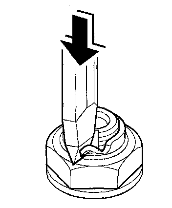
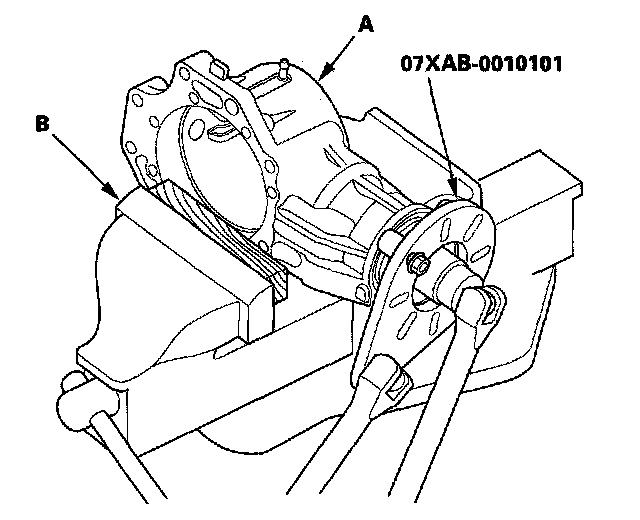

Disassembly
DisassemblyTransfer Assembly:
Special Tools Required
Companion flange holder 07XAB-0010101
NOTE: Refer to the Exploded View as needed during the following procedure.
1. Remove the transfer cover (A) from the transfer housing (B).
2. Remove the transfer hypoid drive gear/shaft assembly (C) 25 mm thrust shim (D) and tapered roller bearing (E).
3. Remove the O-ring (F) from the cover.
4. Drain the transfer fluid (hypoid gear oil) from the transfer housing.
5. Cut the lock tab on the locknut using a chisel.

6. Secure the transfer housing (A) in a bench vise (B) with soft jaws. To prevent damage to the transfer housing, always use soft jaws or equivalent materials between the transfer housing and the vise.

7. Install the companion flange holder on the companion flange, then loose the locknut.
8. Remove the companion flange holder.
9. Remove the locknut (A) conical spring washer (B) back-up ring (C) O-ring (D) and companion flange (E) from the transfer output shaft (hypoid gear) (F).
10. Remove the transfer output shaft (hypoid gear) (A) from the transfer housing (B) then remove the thrust washer (C) and transfer spacer (D) from the transfer output shaft (hypoid gear).
11. Remove the oil seal (A) and tapered roller bearing (B) from the transfer housing (C).